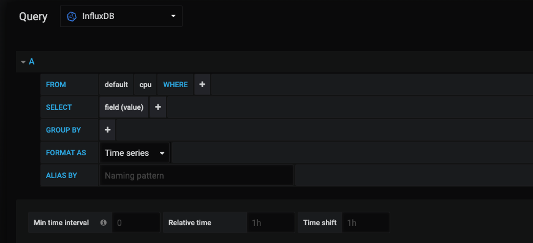

数据存储|InfluxDB
InfluxDB是目前比较主流的时序数据库，而时序数据库则是以时间序列为轴的数据库，与关系型数据库相比它有几个特点：
•每条记录都必须有时间戳字段（不设置会自动生成，类似关系型数据库的主键）
•提供海量数据的写入和读取能力
•提供针对时序的聚合函数，方便查询数据的聚合
•没有固定的schema设计
之所时序数据库要被设计成包含这些特性，是因为它天生就是为特定场景业务而生的；主要针对那些写多读少、大量数据写入需求、按时间维度进行聚合查询的业务场景，比如：数据监控。
数据监控方面细分还是可以分出很多的场景；比如：气象数据、天文数据、人口分布、工资水平、运维资源等等，生活中方方面面的行业都可以使用的到，而在时序数据库之前，人们通常都会使用关系型数据库来代替，但显然需要付出更大的代价才能满足需求。
同样的在测试领域中也是有很多的业务数据，可以使用到时序数据库；比如：产品质量数据，性能压测数据、服务器资源数据等等；所以今天就来介绍下如何安装和简单使用时序数据库。后面再分享如何基于时序数据库展示图表。
安装
brew update
brew install influxdb
ln -sfv /usr/local/opt/influxdb/*.plist ~/Library/LaunchAgents
# 配置文件在/etc/influxdb/influxdb.conf ，如果没有就将/usr/local/etc/influxdb.conf 拷一个过去
配置缓存：cache-max-memory-size
#启动服务
launchctl load ~/Library/LaunchAgents/homebrew.mxcl.influxdb.plist
#停止服务
launchctl unload ~/Library/LaunchAgents/homebrew.mxcl.influxdb.plist
#前台启动
influxd -config /usr/local/etc/influxdb.conf
查看influxdb运行配置
influxd config
使用
➜ ~ influx -precision rfc3339
Connected to http://localhost:8086 version v1.7.7
InfluxDB shell version: v1.7.7
> CREATE DATABASE mydb
> SHOW DATABASES
name: databases
name
----
_internal
mydb
> USE mydb
Using database mydb
# 插入数据
> INSERT cpu,host=serverA,region=us_west value=0.64
#cpu是measurement（table）的名称；host，region是tag（index field）的名称；value是field的名称；整行则是一个point（row）数据；默认这条记录被存储在当前的database下。
#查询数据
> SELECT "host", "region", "value" FROM "cpu"
name: cpu
---------
time host region value
2015-10-21T19:28:07.580664347Z serverA us_west 0.64
#这语法跟mysql几乎没有区别，这里主键time是自动生成的，因为插入时没有带。
关联
1.Grafana 新增Data Sources，选择InfluxDB
2.添加地址以及数据库名称，Save & Test
3.新建DashBoard并创建一个图表，编辑图表Query数据源选择刚刚添加的InfluxDB
4.编辑查询语句：
方式1: 简单查询，直接使用sql查询语句进行查询 例如 SELECT * FROM cpu
方式2: 通过查询模板，使用方式如下图

结果如下